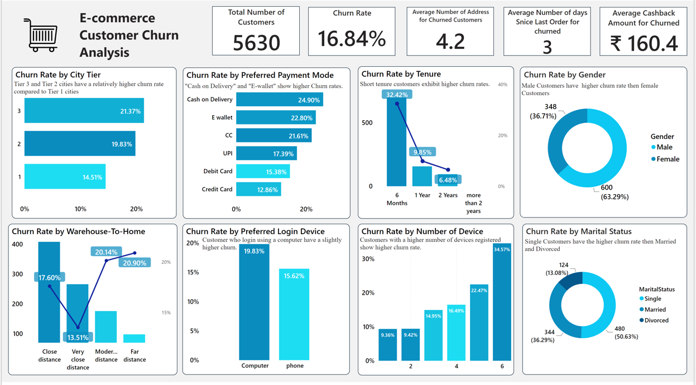

SQL & databases
SQL (Structured Query Language) is a standard programming language used for managing and manipulating relational databases. It allows users to perform various operations such as querying data, updating data, inserting new records, and deleting records in a database.Data Analysis with SQL involves using SQL queries to extract insights and patterns from large datasets stored in databases.
Learning Parctic Files
The dataset underwent meticulous cleansing and analysis using MYSQL, with visualizations facilitated through Microsoft Power BI. The analysis unfolds across distinct phases: data cleansing, data exploration, insights generation, and actionable recommendations.
Project case studies

E-commerce Customer Churn Analysis
The dataset underwent meticulous cleansing and analysis using MYSQL, with visualizations facilitated through Microsoft Power BI. The analysis unfolds across distinct phases: data cleansing, data exploration, insights generation, and actionable recommendations.
Learn more

30 Days SQL -Questions Practice
I have challenged myself to practice 15 SQL exercises every day for 30 days. By tackling these questions, I aim to enhance my understanding of SQL concepts.
Learn more
SQL Training
Here, you can find all the practice files in which I have participated during my SQL training.
Learn more